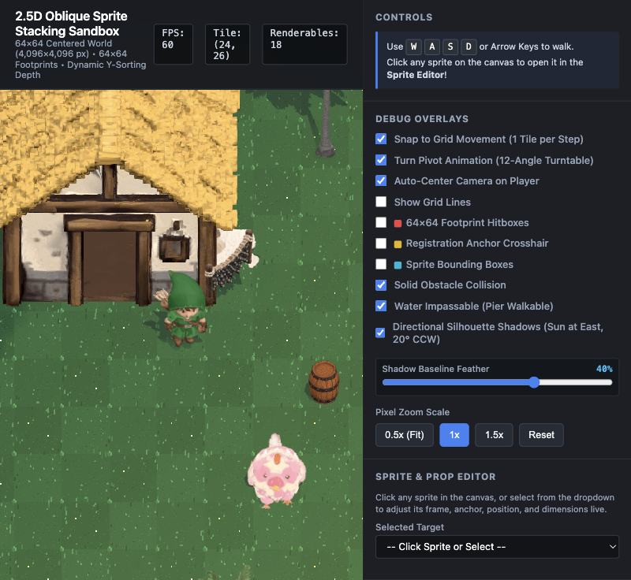
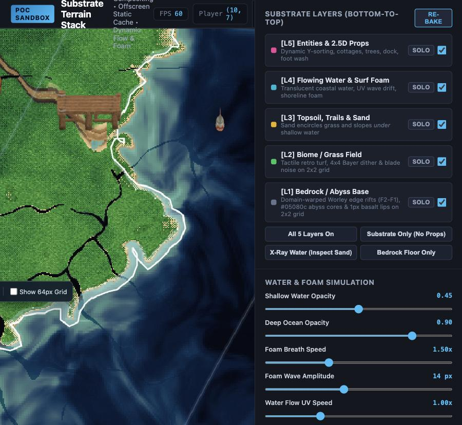
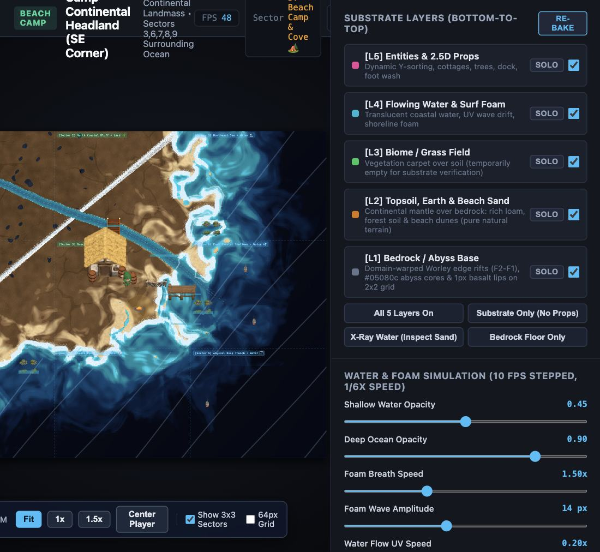

A GAME-ASSET WORKBENCH
Small worlds.
Big layers.
A set of browser-based experiments exploring how sprites, terrain, water, and depth come together in a game world. Pick a scene and explore.
Explore the experimentsTHE COLLECTION
Choose a playground
Three live prototypes, each looking at a different part of the world-building process.

01SPRITES · DEPTH · TOOLS
2.5D Model Sandbox
Place and animate sprites in a living scene. Tune anchors, inspect sorting, paint terrain, and test collisions.
Open the sandbox →
02PROCEDURAL TERRAIN · WATER
Terrain Layers
Explore a five-layer substrate from bedrock to props, with shoreline foam, layer isolation, and procedural controls.
Explore the terrain POC →
03SCENE STUDY · COASTAL WORLD
Beach Camp
See the substrate system applied to a larger coastal scene with beaches, waterways, paths, vegetation, and props.
Visit Beach Camp →